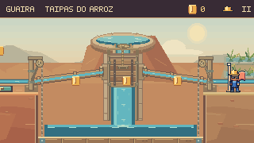
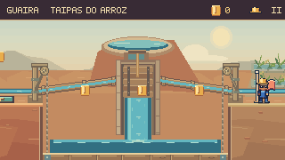

Nova revisão de level design: Escada de manutenção e recuperação local no Pátio — 16/10.
Continuação nas outras fases: A rede de água pelo Pátio, Respiros, Alívio, Subida e Prefeito — 16/10.
Reservatórios, encaixes
e comportas.
As tubulações encontram apoios e vedações na alvenaria. A água converge para uma saída recortada na borda dos reservatórios, enquanto as comportas deslizam por guias com ferragens e acionamento ligados à ponte.


ANTESDEPOISO reservatório ganha borda de pedra, saída contínua e volume na terra. As guias recebem a madeira, e as peças dos encaixes deixam livre o visor dos tubos.
Encaixes na alvenaria
Quatro conexões receberam assentos, juntas e parafusos. Os visores continuam abertos até a parede, inclusive nos tubos inclinados.
Terra, pedra e madeira
Planos amplos de argila assentam os reservatórios no barranco. Juntas na borda, estrias na madeira e ferragens dão acabamento às duas estruturas.
Da superfície à comporta
O volante acompanha a subida da ponte. A porca de acionamento permanece presa à madeira e o parafuso passa pelo suporte fixado nas laterais. Na base da comporta, uma faixa de água marca a saída sob a madeira.
Ver os seis enquadramentos lado a lado

Conferência durante a partida
Percursos completos por entradas de teclado, com física e câmera nativas. Simulação a 60 Hz e captura a 15 quadros por segundo.
Conferência desta rodada
914 testes de Guaíra e build aprovados. Dois percursos completos com capacete intacto, seis comparações e duas aberturas em movimento. Pausa, movimento reduzido e continuidade da água também foram verificados.
Comparações e percursos · Conferência no navegador · Registro técnico